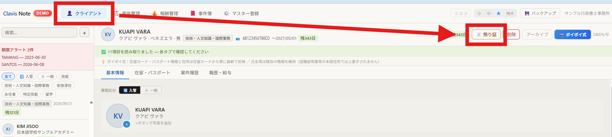
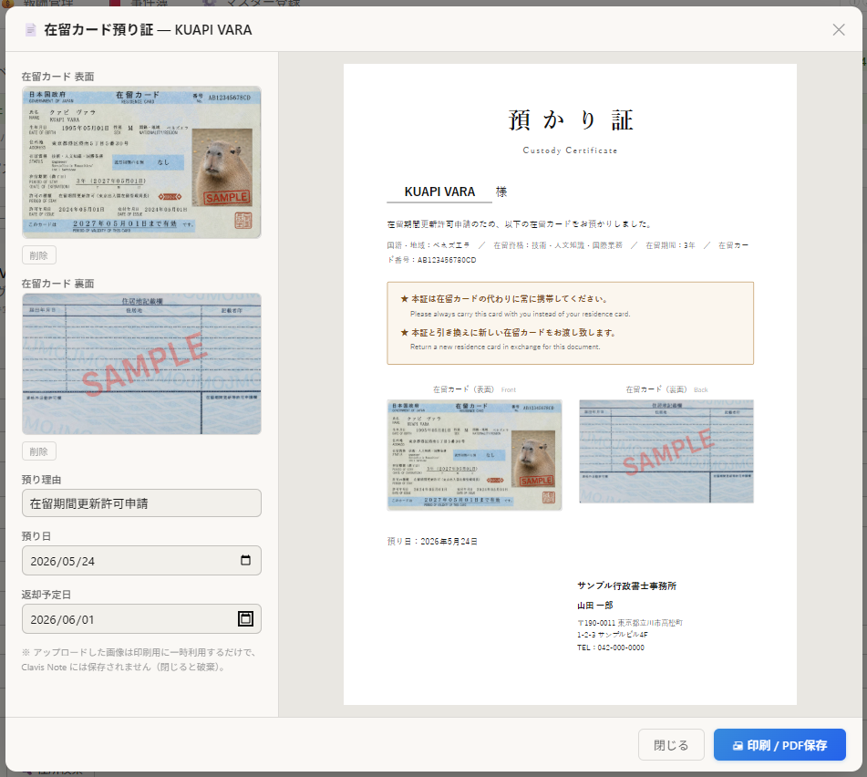
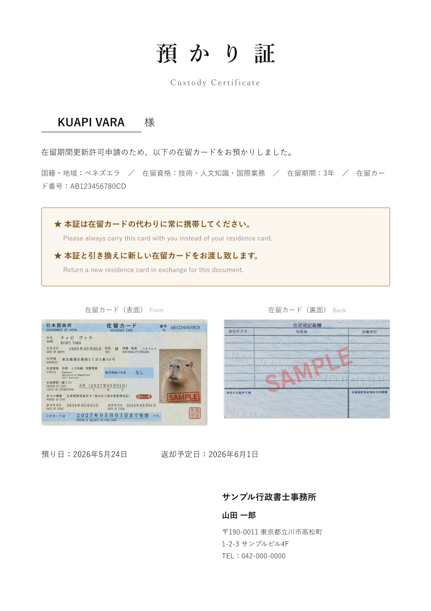
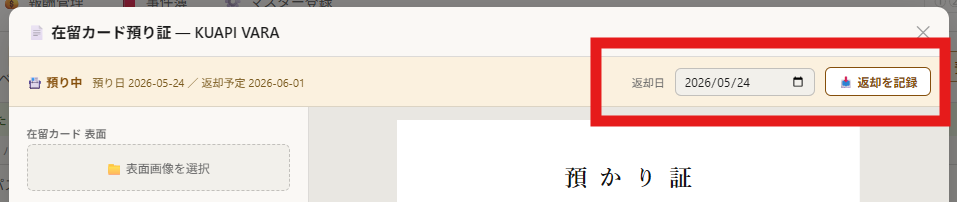
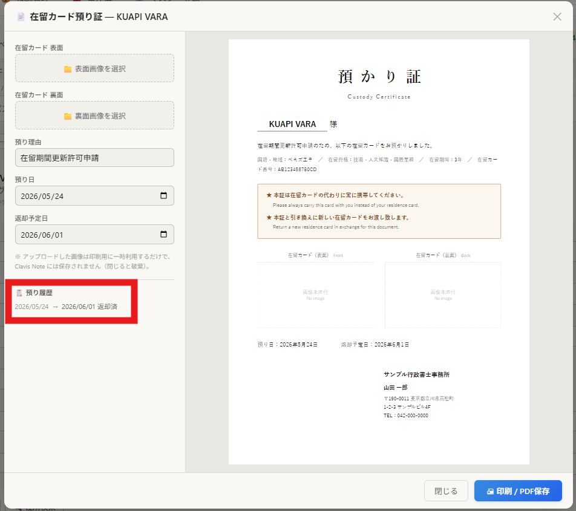

預り証の発行って、地味にめんどくさい…💧
私にとっては、そもそも Word というものが、画像を入れるとすぐレイアウトが崩れたり、扱うのが厄介な代物でした。Excel でフォーマットを作ってみたり、ネットでテンプレートを拾ってきたりもしましたが、せっかく Clavis Note ができたので、ついでにつけてしまいました！😄

クライアントタブの、各クライアントのヘッダーにある預り証発行ボタンをポチッとすると…
預り証発行画面が表示されます！
在留カードの画像を、表面・裏面のそれぞれアップロードしたら…

瞬時にこんな預り証が発行できます！

ちなみに、預り証発行後は、返却記録のバナーが出て

預かった日と、在留カード返却日をちゃんと記録できるので、安心です。

スマホからでもすぐにできるので、クライアントのところに出向いて在留カードを預かったら、現場で「撮影 → 預り証発行」がワンストップ…いえ、ノンストップでできます！
ぜひご活用ください。
CLAVIS NOTE について
作業に追われていた時間を、人と向き合う時間へ。
現役行政書士・ながみ行政書士事務所代表が運営する、在留資格業務の現場から生まれた、行政書士のためのオールインワン管理ツール。30日間の無料トライアル、件数制限なしでお試しいただけます。